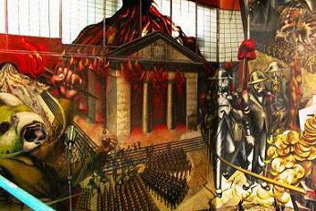
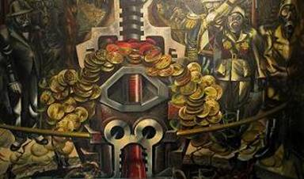
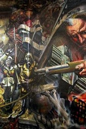
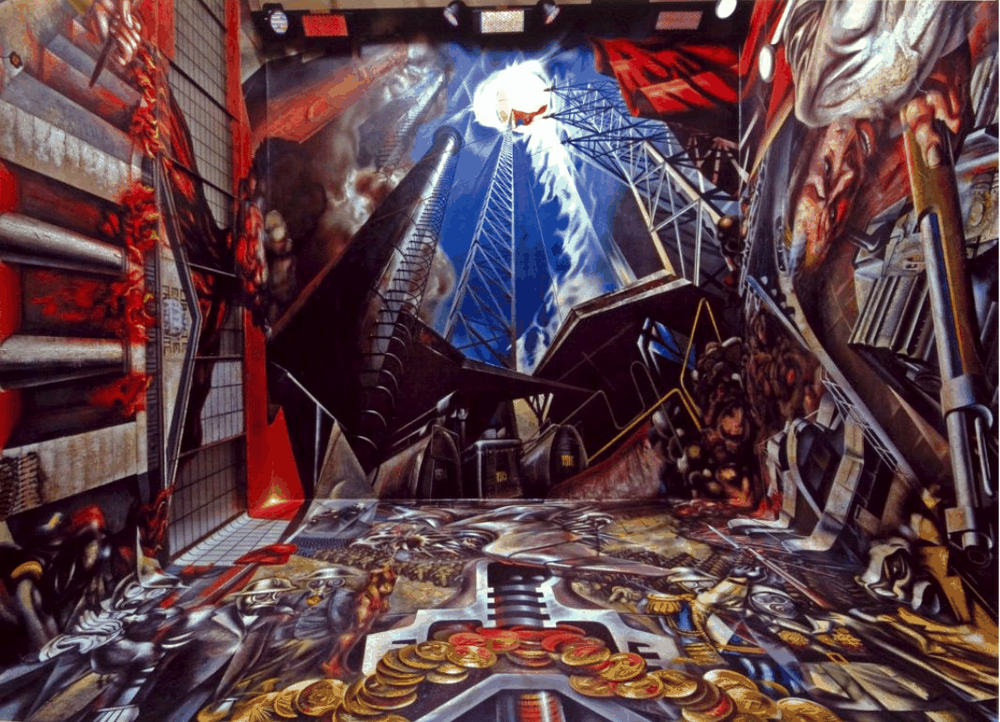
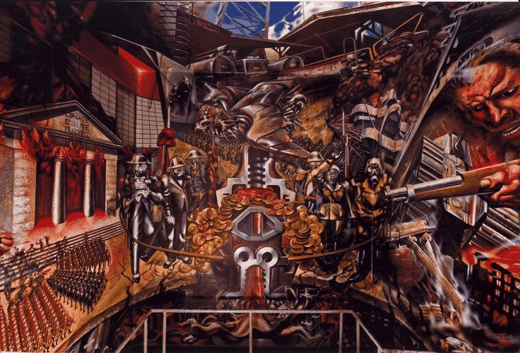

Torres López Luis Arturo
En este texto se hace una explicación del ¿cómo? y el ¿por qué? Se hizo el mural “Retrato de la burguesía” en 1939, se intenta hacer relación con el contexto del muralismo, el fascismo de entreguerras, la vida de Siqueiros y la de Josep Renau. El muralismo fue un movimiento artístico de suma importancia en México durante la primera mitad del siglo XX y no basta con generalizarlo como un mero discurso para generar una identidad posrevolucionaria, ya que cada exponente tuvo una interpretación propia del movimiento y generó sus propias técnicas para llevarlo a cabo, es por eso que resulta importante rescatar la mirada particular de Siqueiros.
México después de la revolución pasó por un periodo de estabilización y modernización en el que se buscó cambios políticos, económicos, sociales y culturales, mediante políticas públicas promovidas por el gobierno. En 1922, Vasconcelos, secretario de Educación Pública durante el régimen del general Obregón, encarga una serie de murales para el patio de la Escuela Nacional Preparatoria, dando inicio a lo que se conocería como muralismo.1
En esta época, hubo una revaloración de la cultura prehispánica, entendiéndose como fundamental para la conformación de la identidad nacional.2 En este proceso de configurar la propia identidad, el muralismo recupera las tradiciones populares, las llamadas artes menores y el pasado prehispánico. Por otra parte, y no menos importante, el movimiento muralista expone su rechazo al arte elitista y burgués exaltando, en oposición a este, un arte de índole monumental y público.3 En el Manifiesto 1923 llaman a crear un arte público monumental, de educación y de combate:
“Repudiamos la pintura de caballete y todo arte de cenáculo ultraintelectual, por aristocrático y exaltamos las manifestaciones de arte monumental por ser de utilidad pública. Proclamamos que toda manifestación estética ajena o contraria al sentimiento popular es burguesa y debe desaparecer porque contribuye a pervertir el gusto de nuestra raza, ya casi completamente pervertido en las ciudades”.4
Con el párrafo anterior, se puede entender como los pintores muralistas proponen un arte público monumental al servicio de la Revolución Mexicana, en el que expresan un fuerte compromiso social. El muralismo determina que la joven república, luego de la revolución, necesitaba un arte grandioso, capaz de conmover e impresionar a las multitudes. Es así, como los artistas del momento proponen el fresco, ya que había sido una técnica con la que habían estado en contacto cuando visitaron Europa y además se pensaba que algunas representaciones prehispánicas habían sido similares a una obra en un muro.5
Por otro lado, en la decada de los 30 a nivel mundial, los Nazi-Fascistas amenazaban con la expansión de sus dominios; Europa se veía afectada en todos los ámbitos.6 Lo que provocó una ola destructiva, en la que la tecnología se aplicaba decididamente a la aniquilación masiva. Algunos artefactos, como el ferrocarril, el avión, el telégrafo, anteriormente símbolos del progreso, pasaron a ser útiles en la guerra inter-territorial.7 Europa era zona de guerra, en donde una serie de ideologías marcaban el ritmo político de sus alrededores, Hitler, Trotsky, Stalin, Mussolini, entre otros, fueron líderes que marcaron formas de militancia alrededor de todo el mundo.
David Alfaro Siqueiros fue un personaje sensible a los acontecimientos de México y del mundo. Formó parte de los grandes artistas del muralismo e hizo un gran número de murales en su país y alrededor del mundo. Nació el 29 de diciembre de 1896 en Chihuahua, y murió el 4 de enero de 1974 en Morelos. Comenzó sus estudios de pintura en 1908, estuvo en la Academia de San Carlos y en la Escuela de Pintura al Aire Libre de Santa Anita.8 Tuvo la oportunidad de viajar a Europa y ver de cerca las vanguardias artísticas de su tiempo, en su viaje tuvo contacto con el otro muralista mexicano, Diego Rivera. En 1922 de regreso en México se incorporó al grupo de artistas comisionados para llevar a cabo el programa iconográfico mural de la Escuela Nacional Preparatoria.9
A lo largo de su vida tuvo una fuerte participación política, pues perteneció a una gran variedad de grupos militantes de izquierda. Como el Comité Ejecutivo del Partido Comunista Mexicano, la Confederación Sindical Latinoamericana, la Liga de Escritores y Artistas de Uruguay y la Liga Nacional contra el Fascismo y la Guerra, en 1935 crea en Nueva York el “Siqueiros Experimental Workshop”.10 Estuvo varias veces en la cárcel por corromper el orden, debido a su compromiso político.
Para Siqueiros el socialismo revolucionario y la modernidad tecnológica eran conceptos íntimamente relacionados. Estaba convencido de que la naturaleza revolucionaria del arte no dependía tan sólo del contenido de sus imágenes, sino de la creación de un equivalente estético y tecnológico en consonancia con los contenidos.11 Toda su vida artística estuvo presidida por la voluntad de crear una pintura mural experimental e innovadora. En 1950 ganó el Premio para Artistas Extranjeros en la XXV Bienal de Venecia y dieciséis años después, en 1966 le fue entregado el Premio Nacional de Artes, otorgado por el Gobierno de México.12
En la década de los 30 muchos artistas e intelectuales fueron exiliados en México, debido a los conflictos bélicos y políticos de Europa.13 Entre ellos hubo un artista plástico que estuvo muy en contacto con David Alfaro Siqueiros, se trató de Josep Renau Berenguer, quien nació en Valencia, 17 de mayo de 1907 y murió en Berlín Este, 11 de noviembre de 1982. Renau fue un pintor, cartelista, fotomontador, diseñador gráfico, muralista, teórico del arte y militante comunista español, su obra destaca por sus innovaciones en el uso del collage y su carácter político.14
Josep Renau tras el fin de la Guerra Civil se exilió en México y en la República Democrática Alemana, donde desarrolló una parte importante de su obra.15 El artista adaptó un sistema de representación propio que pretendía funcionar como gramática crítica contra la sociedad capitalista estadounidense. Su trabajo estaba lleno de sentido pictórico e intuición fotográfica, llevándolo a crear documentos ideológicos y objetos artísticos.
David Alfaro Siqueiros y Josep Renau, junto con Luis Arenal y Antonio Pujol trabajaron en México en la realización de un mural llamado “Retrato de la burguesía”, el cual fue pintado en el recinto del Sindicato Mexicano de Electricistas, edificio construido por los arquitectos Enrique Yáñez y Ricardo Rivas. El mural fue realizado entre noviembre de 1939 y mayo de 1940, recibió durante el proceso de su ejecución otros dos nombres; Monumento al capitalismo y Orígenes del fascismo.16
David Alfaro Siqueiros se encargó de formar el equipo de pintores y subrayó como hecho muy importante que el tema fue propuesto por la dirección del SME “Se nos pidió que pintáramos tres asuntos; el imperialismo, el fascismo y la guerra”.17 Además, fue él quien presentó a sus compañeros pintores un proyecto de organización estructural de las superficies a pintar, elaborando una maqueta que les permitió establecer correlaciones armónicas de pared a pared.18
La técnica que aplicaron fue mixta, innovaron empleando celulosa como material básico, la cual les ofreció mucha maleabilidad tanto para las texturas como para las transparencias, por otro lado, decidieron utilizar el aerógrafo, probado ya por Siqueiros con buenos resultados en sus murales de la ciudad de Los Ángeles. Fue así como llegaron a concebir una plástica mural como unidad espacial en los metros cuadrados de la superficie. La obra se encuentra en el cubo de la escalera y ocupa los tres muros y el techo, constituyendo un claro ejemplo de integración plástica, que es la armoniosa concurrencia de artes como la pintura y la arquitectura.19
Para explicar el mural se abordará pared por pared, intentando dar detalle de su iconografía. El mural comienza cuando se suben las escaleras, en la primera pared se miran a los fascistas que están marchado uniformemente ante las arengas de un loro, pintado en alusión a Hitler y Mussolini, que el cuál porta una tea de índole incendiaria y destructiva.20 Dicho loro en una de sus manos parece moverla hacia abajo para mostrar una flor diminuta de color morado, como si fuese poca y decepcionante la compensación por la destrucción comenzada. En la mano izquierda lleva una antorcha, la que le conecta directamente con la destrucción de un edificio, que en el segundo plano se ve ardiendo. Se trata del "Reidstag", el parlamento alemán, que en su frontón ostenta las palabras "Liberte", "Egalite", "Fraternite", las divisas de la Revolución Francesa, ideales de las modernas Repúblicas, cuyas instituciones fueron anuladas durante el régimen de Hitler.21
En el centro de la composición, que corresponde al muro central, se puede ver la figura de una máquina que produce dinero, su cuerpo metálico se combina con partes orgánicas, con los tentáculos de un pulpo, los cuales devoran a los hombres. Una dramática que lleva a pensar en una alegoría de la explotación del hombre por el hombre, en un juego metafórico muy al gusto de José Renau.22 En el remate de la máquina está un par de aves de rapiña, sombría caricatura de las águilas imperialistas, tanto la nazi como la norteamericana, puesto que del cuello de uno de los buitres está colgado el cuerpo de un hombre negro, principal segregado en la sociedad más representativa del capitalismo.
Los beneficiados por la explotación económica son los personajes que Siqueiros pintó en las esquinas del cubo de la escalera. En la derecha los militares y en la opuesta los integrantes de la burguesía. Los militares tienen sus medallas ensangrentadas, pues son criminales de guerra. Por otro lado, los rostros de la burguesía permanecen ocultos, porque tienen máscaras antigases, los que permiten ser inmunes ante las armas químicas, inmunidad que les proporciona su capacidad económica, puesto que en toda guerra ellos son los menos expuestos a la muerte y al sufrimiento.
El pintor sintió esta crisis e igualmente deseaba poner en crisis a los valores burgueses, lo que queda de manifiesto al pintar agrietado el suelo sobre el que están parados los militares y los capitalistas. El pavimento se destruye y permite ver un mundo subterráneo, que es el de los proletarios, que con su trabajo sostienen a la sociedad. Por el contrario en la techumbre se sugiere un final luminoso, corolario de la lucha, sentido de la Historia , según lo concebía el pintor, como lo deseaban tantos otros hombres beligerantes; aquellos que intentaban tomar “al cielo por asalto".23
Finalmente la última pared, parece estar dedicada a la lucha obrera, coloca a los marginados en el nivel subterráneo, planteando una actitud solidaria con los trabajadores. En esta escena, el pintor ha planteado una salida violenta, que puede verse en la figura de un hombre que porta su fusil en actitud de guerra. Pero puede verse en su atuendo, que no se trata de un soldado profesional, es un civil que ha tomado las armas para desatar la otra guerra, no la imperialista, que es como Siqueiros calificaba a las guerras mundiales, sino la revolucionaria, en términos del pintor.
En el mural es necesario que el observador se desplace por las escaleras, provocando que el recorrido con la vista sea inevitable por los tres muros y el techo, al hacerlo una narración surge de la representación. A través del análisis del mural se resalta el uso de tecnologías y técnicas vanguardistas, que fueron resultado de la colaboración de Siqueiros con Josep Renau. Con el análisis es posible conocer cuáles fueron los métodos y procedimientos que obedecían a las innovaciones tecnológicas que practicaban ambos artistas. Tanto Renau como Siqueiros en la experimentación plástica utilizaron herramientas mecánicas, materiales sintéticos y medios masivos de comunicación audiovisual.
David Alfaro Siqueiros en su obra buscó una relación entre la tecnología y el arte, dotando al muralismo de una técnica que incluyera las tecnologías del momento, lo cual hace particular su obra, a comparación de los otros muralistas. Dentro del grupo, el valenciano Josep Renau fue el que tuvo la mayor participación en la producción del mural y el que compartía con Siqueiros la experimentación con la tecnología y medios de comunicación en la plástica. Las técnicas que compartían estos dos artistas eran la fotografía, el cine y el montaje, y todas tuvieron un enfoque en el mural.24
Renau es considerado artista de vanguardia por ser precursor del fotomontaje en España, este método lo llevo a la gráfica, al cartel y a montajes de gran formato.25 Desde muy temprano el valenciano se dedicó a organizar "bancos de imágenes", extraídas de revistas y tomadas por él mismo.26 Siqueiros también utilizó imágenes de guerra de revistas ilustradas para los montajes en sus pinturas. Retrato de la Burguesía es un paradigma en el muralismo por el uso del montaje como estrategia de disposición del espacio pictórico, es llevado el montaje fotográfico y cinematográfico al muro. Renau y Siqueiros con el uso de las fotografías de guerra ,apropiadas de las revistas ilustradas del momento, estaban desplazando los medios de comunicación masiva hacia una función estética con intenciones políticas y sociales.
En el mural, se puede notar que David Alfaro Siqueiros tuvo la idea de que el espacio es una piedra fundamental en la estética del muralismo. El espacio, a la vez signo de referencia histórica, lo advierte dentro de la condición social de su existencia. Espacio es signo, signo es sentido y sentido es comunicación; constructo ideológico, convencional y no convencional, dado a la historia y a su devenir. El pintor optó por abstraer de su sentido geográfico el lugar que ocupa todo acto del hombre, convirtiéndolo en un espacio de sensibilidad. El espacio estético define al espacio social, y así se delimitó el sentido histórico del arte público.27
Se puede entender que para Siqueiros la cámara fotográfica sólo era parte de un sistema más complejo, a partir del cual se podía experimentar con la plástica de las representaciones.28 Se sabe que su sistema también estaba conformado por la cámara cinematográfica, pistola de aire, proyector eléctrico, lineógrafo, aerógrafo, materiales sintéticos, etc. Fue en una exposición fotográfica de Edward Weston y Tina Mo-dotti, llevada a cabo en Guadalajara en 1925, en el museo del estado, que David Alfaro Siqueiros anotó la condición de autonomía como principal valor histórico y estético de la forma fotográfica, fue a partir de esas reflexiones que siempre al momento de iniciar un mural decía, "Cada pintor necesita una cámara”.29
De la misma manera, la relación de David Alfaro Siqueiros con el cine, como con la fotografía, fue amplia y fecunda. Se puede notar la idea de fotograma en el movimiento del mural, como una manera de darle narrativa a la representación mediante la secuencia de imágenes. El pintor ponderó la validez y autonomía de las poéticas que convergen en la realización del arte público y reconoció en el cine un elemento singular y revolucionario. Su entusiasmo fue tanto que lo llevó a reconsiderar el lugar histórico que tendría el trabajo de los muralistas mexicanos del que fue partícipe, incluso, reflexivo y autocrítico.
En el mural Siqueiros hace una mezcla de técnicas, de las cuales el artista no las entiende como soporte, sino que les da un sentido de elocuencia y encuentra una unidad plástica que permite el uso de las mismas. El testimonio y los conceptos que José Renau pudo experimentar con David Alfaro Siqueiros fueron parte de un trabajo colectivo satisfactorio. Fue una estancia de motivación estética y conjunción plena de certezas y confianzas mutuas; de ratificación de saberes ya antes operados y de apertura a otros.
El mural “Retrato de la burguesía” fue una obra que perteneció al movimiento muralista mexicano debido a su complejidad plástica, en la que se combinan muchas técnicas y se hace uso de la tecnología del momento. También, responde a las preocupaciones de Siqueiros, como los es la lucha antimperialista, la desigualdad social y el papel del obrero en la revolución, lo que lleva a pensar que el pintor forjó su propio estilo en sus murales, si bien pertenecía al movimiento mexicano, fue único en su tipo. Un punto importante del mural es la relación con la arquitectura para lograr lo que Siqueiros concibe como arte público, pues es a partir del espacio en donde una representación se hace pública, pues es donde se relaciona con el pueblo directamente. Finalmente se puede mencionar la importancia de Josep Renau en la elaboración del mural, ya que no sólo fue una mano con el pincel, sino que ayudó a Siqueiros a entender el espacio mediante la fotografía, el fotomontaje y el cine, además su ideología de izquierda enriqueció la visión política de Siqueiros, por lo que se puede decir que el mural no de mera autoría de David, sino que es resultado de una visión y técnica ecléctica.




